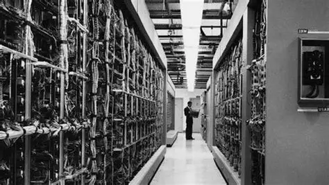
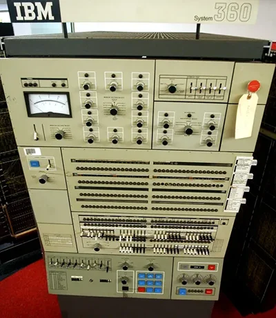
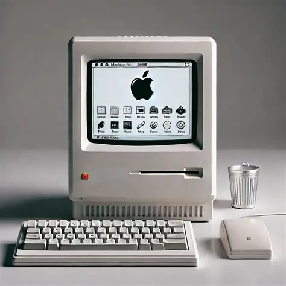
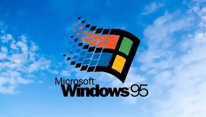
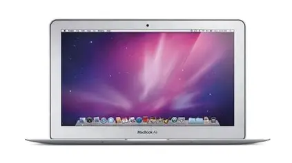
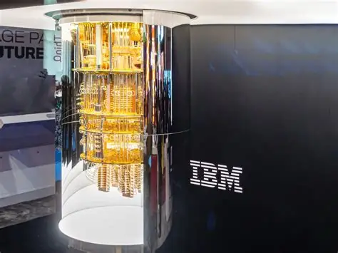

a interação IHC(interação humano computador) é a definição de como a máquina é utilizada pelo usuário, e sobre suas capacidades, limites, qualidades, defeitos e possibiidades que se foram e estão vindo. nessa página, iremos falar sobre a sua evolução, datas e conquistas ao longo do grande caminho da humanidade em busca do estado da arte da tecnologia (simplificado)
nos primórdios da computação, as interações e a capacidade era incrivemente limitada e cheia de demandas, computadores eram do tamanho de salas de aula, e o funcionamento era dependente de válvulas, alto custo. e possuia baixo desempenho.

EDSAC foi um computador Britânico de meados de 1949
seu tamanho, sua complexidade e o seu custo de produção e energético faziam esse modelo se tornar inviável para o uso regular
reduziu o tamanho e o custo, porém, ainda inviável para uso doméstico por causa da sua complexidade e utilidade limitada (e os custos ainda altos demais)

o modelo também incluia um sistema mais primitivo da transferência de dados
o Macintosh marcou o começo da comercialização de computadores para uso doméstico e para trabalho mais focado pras áreas civís, criado pela Apple, modelos criados por outras empresas e anteriores tinham uma estrutura que precisava de conhecimento técnico para uso, o Macintosh marcou a criação de um computador mais auto explicativo e conveniente do que os anteriores

o modelo também se tornou icônico pelo seu nome (que deriva de uma maçã), pelo seu estilo único e pela sua praticidade que foi revolucionária pra época
com o sucesso do Macintosh, a Microsoft seguiu e lançou o Windows 95, que possuia maior desempenho, qualidade gráfica, consumia menos energia, e era notavelmente mais adaptável para as mais diversas tarefas cotidianas e empresariais

em 2008, a Apple lança o Mac(intosh)Book Air, que possuia uma maior portabilidade, o que fez desse modelo, um clássico para estudantes

é importante notar que seu desempenho era relativamente inferior a um desktop padrão da época, mas fornecia alta mobilidade e portabilidade
em 2019, a empresa IBM Quantum criou o quantum system one, um modelo que segue a ciência quântica e usa qubits instáveis e incrivelmente sensíveis que precisam ser mantidos em baixíssimas temperaturas para melhor funcionamento, atualmente considerado um dos grandes avanços da tecnologia, porém, inviável para uso doméstico, e com altíssimo custo de manutenção, apenas o futuro sabe quando que um computador quântico será viável para uso como o computador ortodoxo que conhecemos

é importante notar que seu desempenho era relativamente inferior a um desktop padrão da época, mas fornecia alta mobilidade e portabilidade
é possível concluir que a humanidade passou por um longo caminho de estudos, pesquisas e ajustes para alcançar o estado atual, desde o EDSAC que possuia válvulas e era gigante, até o começo da redução de tamanho (e a capacidade mais primitiva de transferência de dados) até o macintosh que abstraiu e humanizou a computação, deixando ela mais acessível, seguindo pelo aprimoramento no Windows 95 que marcou uma padronização e mudança total, e agora, seguindo para os computadores quânticos, que por mais que estejam em um estado inicial relativo, comprovam que o avanço nunca acaba. a vontade humana de alcançar o ápice prevalece.